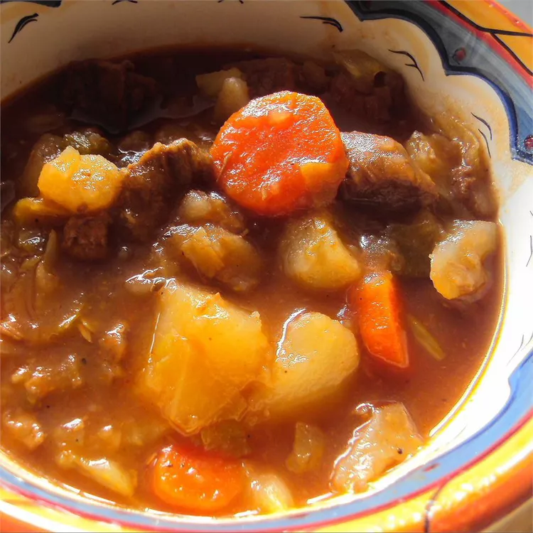

Beef Stew
Home

How to Make Beef Stew
This cabbage stew with tender beef and potatoes is a very good recipe.
My 93-year-old mother-in-law has recently told me that this is the best
meal I have ever brought her, and there have been many.
All the veggie prep can be done while the onions and bay leaves are
simmering. I do add more broth when the veggies go in. The cabbage will
add a significant amount of water but the beef flavor is key.
Ingredients
- 1 1/2 pounds of stewing beef
- 2 cups beef broth
- 1 large onion
- 1 Bay leaf
- 4 cups shredded cabbage
- 2 potatoes, peeled and cubed
- 1 carrot
Steps
- Cook and stir stew meat in a large saucepan or Dutch oven over
medium heat until browned on all sides, 10 to 15 minutes.
Drain any excess grease.
- Stir beef bouillon into beef broth in a bowl until dissolved;
pour over stew meat. Add onion, black pepper, and bay leaf;
cover and simmer until stew meat is very tender,
at least 2 hours.
- Add cabbage, potatoes, celery, and carrot; cover and simmer until
potatoes are tender, 30 to 45 more minutes.
- Stir tomato sauce and salt into the stew; simmer, uncovered, until
tomato sauce is fully incorporated and flavors have blended,
15 to 20 minutes.